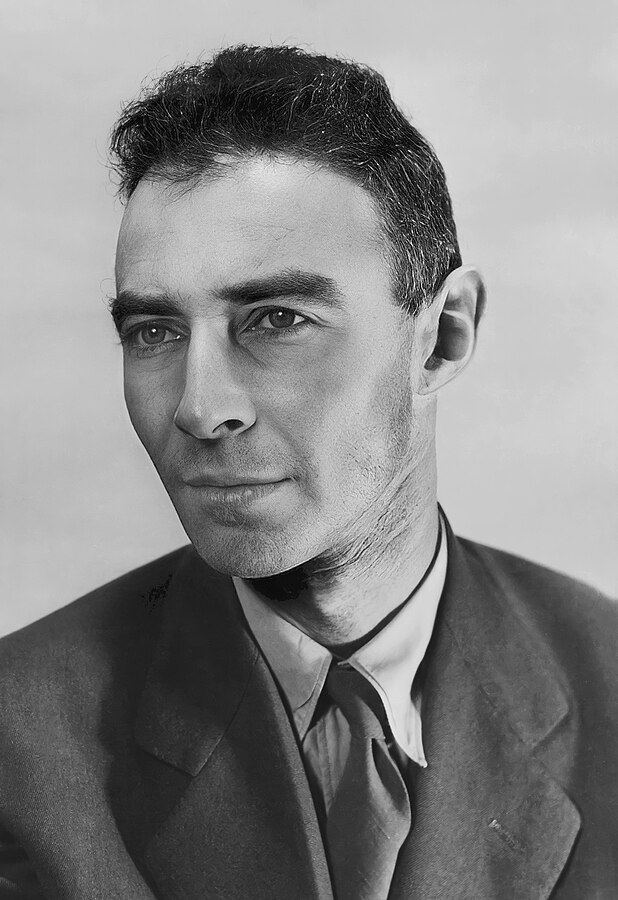

1955-2011
"Design is not just what it looks like and feels like. Design is how it works"
Julius Robert Oppenheimer (April 22, 1904 – February 18, 1967) was an American theoretical physicist and director of the Manhattan Project's Los Alamos Laboratory during World War II. He is often called the "father of the atomic bomb. Born in New York City to Jewish immigrants from Germany, Oppenheimer earned a bachelor's degree in chemistry from Harvard University in 1925 and a doctorate in physics from the University of Göttingen in Germany in 1927. After research at other institutions, he joined the physics department at the University of California, Berkeley, where he became a full professor in 1936. He made significant contributions to theoretical physics, including achievements in quantum mechanics and nuclear physics such as the Born–Oppenheimer approximation for molecular wave functions, work on the theory of electrons and positrons, the Oppenheimer–Phillips process in nuclear fusion, and the first prediction of quantum tunneling. With his students, he also made contributions to the theory of neutron stars and black holes, quantum field theory, and the interactions of cosmic rays.